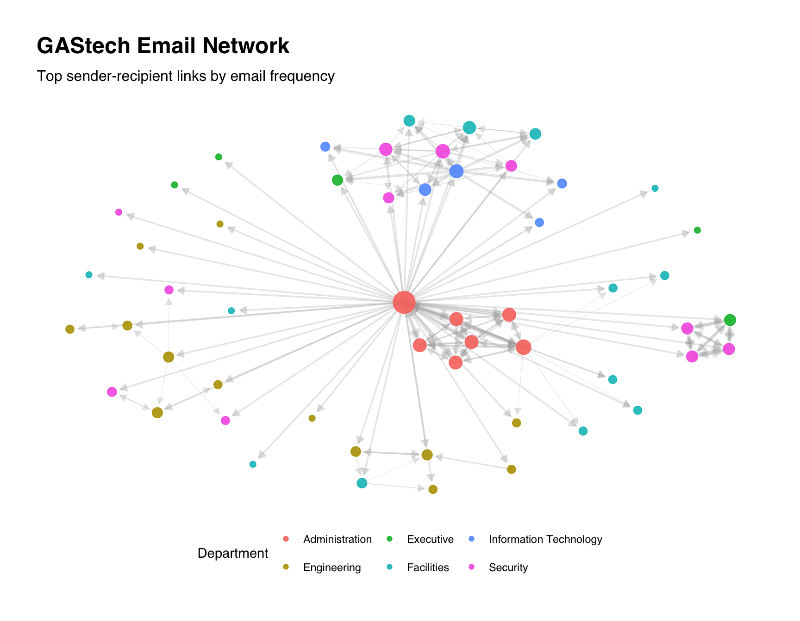
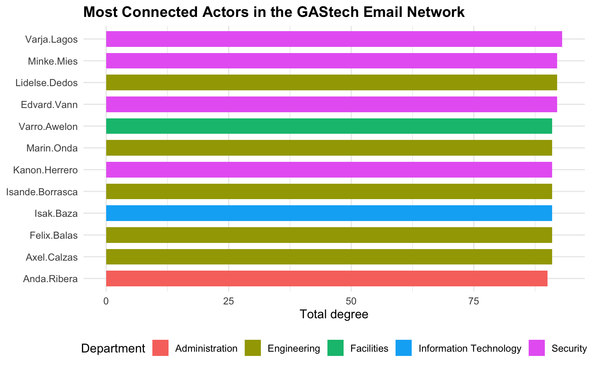
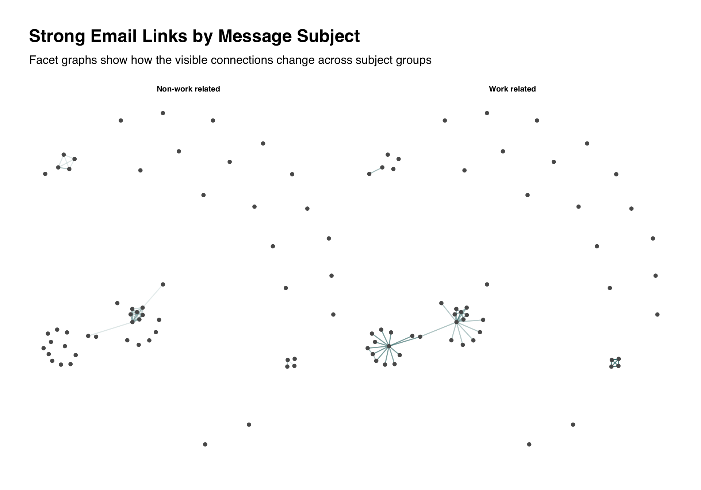

if (!requireNamespace("pacman", quietly = TRUE)) {
install.packages("pacman", repos = "https://cloud.r-project.org")
}
pacman::p_load(
tidyverse,
lubridate,
tidygraph,
ggraph,
igraph,
visNetwork,
scales,
DT,
knitr
)Hands-on_Ex07a
1 Modelling, Visualising and Analysing Network Data with R
1.1 Overview
Network data is useful when the relationship between records is as important as the records themselves. Instead of looking only at individual people, departments or messages, a network view lets us examine who connects to whom, which links are frequent, and which actors sit near the centre of communication.
In this hands-on exercise, the GAStech email data is used to build a directed communication network. The focus is on preparing edge and node files, creating a graph object, plotting static network graphs, calculating centrality measures, detecting communities and producing an interactive network graph.
By the end of this exercise, we should be able to:
- import node and edge files for a network;
- clean time and attribute fields before graph construction;
- create a
tbl_graphobject withtidygraph; - visualise a network with
ggraph; - compare centrality measures across actors;
- create an interactive network graph with
visNetwork.
1.2 Installing and launching R packages
The main packages used here are tidyverse for data wrangling, tidygraph and igraph for network modelling, ggraph for static network visualisation and visNetwork for interactive exploration.
1.3 The Data
Two files are used:
GAStech_email_edge-v2.csvrecords the sender, recipient, date, time and message subject.GAStech_email_node.csvrecords each employee’s id, name, department and title.
The edge file describes relationships. The node file describes the actors in the network.
1.3.1 Importing network data from files
edge_path <- "data/GAStech_email_edge-v2.csv"
node_path <- "data/GAStech_email_node.csv"
if (!file.exists(edge_path) || !file.exists(node_path)) {
stop("The GAStech edge or node file is missing from the data folder.")
}
edges_raw <- read_csv(edge_path, show_col_types = FALSE)
nodes_raw <- read_csv(node_path, show_col_types = FALSE)glimpse(edges_raw)Rows: 9,063
Columns: 8
$ source <dbl> 43, 43, 44, 44, 44, 44, 44, 44, 44, 44, 44, 44, 26, 26, 26…
$ target <dbl> 41, 40, 51, 52, 53, 45, 44, 46, 48, 49, 47, 54, 27, 28, 29…
$ SentDate <chr> "6/1/2014", "6/1/2014", "6/1/2014", "6/1/2014", "6/1/2014"…
$ SentTime <time> 08:39:00, 08:39:00, 08:58:00, 08:58:00, 08:58:00, 08:58:0…
$ Subject <chr> "GT-SeismicProcessorPro Bug Report", "GT-SeismicProcessorP…
$ MainSubject <chr> "Work related", "Work related", "Work related", "Work rela…
$ sourceLabel <chr> "Sven.Flecha", "Sven.Flecha", "Kanon.Herrero", "Kanon.Herr…
$ targetLabel <chr> "Isak.Baza", "Lucas.Alcazar", "Felix.Resumir", "Hideki.Coc…glimpse(nodes_raw)Rows: 54
Columns: 4
$ id <dbl> 1, 2, 3, 4, 5, 6, 7, 44, 45, 46, 8, 9, 10, 11, 12, 13, 14, …
$ label <chr> "Mat.Bramar", "Anda.Ribera", "Rachel.Pantanal", "Linda.Lago…
$ Department <chr> "Administration", "Administration", "Administration", "Admi…
$ Title <chr> "Assistant to CEO", "Assistant to CFO", "Assistant to CIO",…knitr::kable(head(edges_raw), format = "html")| source | target | SentDate | SentTime | Subject | MainSubject | sourceLabel | targetLabel |
|---|---|---|---|---|---|---|---|
| 43 | 41 | 6/1/2014 | 08:39:00 | GT-SeismicProcessorPro Bug Report | Work related | Sven.Flecha | Isak.Baza |
| 43 | 40 | 6/1/2014 | 08:39:00 | GT-SeismicProcessorPro Bug Report | Work related | Sven.Flecha | Lucas.Alcazar |
| 44 | 51 | 6/1/2014 | 08:58:00 | Inspection request for site | Work related | Kanon.Herrero | Felix.Resumir |
| 44 | 52 | 6/1/2014 | 08:58:00 | Inspection request for site | Work related | Kanon.Herrero | Hideki.Cocinaro |
| 44 | 53 | 6/1/2014 | 08:58:00 | Inspection request for site | Work related | Kanon.Herrero | Inga.Ferro |
| 44 | 45 | 6/1/2014 | 08:58:00 | Inspection request for site | Work related | Kanon.Herrero | Varja.Lagos |
1.3.2 Wrangling time and attributes
The original date and time fields are stored separately. They are combined into one timestamp so that the network can later be filtered by time if needed.
edges <- edges_raw %>%
mutate(
source = as.integer(source),
target = as.integer(target),
sent_at = lubridate::mdy_hms(
paste(SentDate, SentTime),
tz = "UTC",
quiet = TRUE
),
sent_date = as.Date(sent_at),
MainSubject = replace_na(MainSubject, "Unknown subject")
) %>%
filter(!is.na(source), !is.na(target), source != target)
nodes <- nodes_raw %>%
mutate(
id = as.integer(id),
Department = replace_na(Department, "Unknown department"),
Title = replace_na(Title, "Unknown title")
)The email records are then aggregated so each sender-recipient pair has one row and a weight showing how many messages were exchanged in that direction.
email_edges <- edges %>%
count(
source,
target,
sourceLabel,
targetLabel,
MainSubject,
name = "weight"
) %>%
arrange(desc(weight))
email_edges_pair <- edges %>%
count(source, target, sourceLabel, targetLabel, name = "weight") %>%
arrange(desc(weight))knitr::kable(head(email_edges_pair, 10), format = "html")| source | target | sourceLabel | targetLabel | weight |
|---|---|---|---|---|
| 40 | 41 | Lucas.Alcazar | Isak.Baza | 42 |
| 1 | 2 | Mat.Bramar | Anda.Ribera | 38 |
| 1 | 3 | Mat.Bramar | Rachel.Pantanal | 38 |
| 1 | 4 | Mat.Bramar | Linda.Lagos | 38 |
| 1 | 5 | Mat.Bramar | Ruscella.Mies.Haber | 38 |
| 1 | 6 | Mat.Bramar | Carla.Forluniau | 38 |
| 1 | 7 | Mat.Bramar | Cornelia.Lais | 38 |
| 41 | 40 | Isak.Baza | Lucas.Alcazar | 33 |
| 41 | 43 | Isak.Baza | Sven.Flecha | 33 |
| 40 | 43 | Lucas.Alcazar | Sven.Flecha | 32 |
1.4 Creating network objects using tidygraph
1.4.1 The tbl_graph object
The tbl_graph() function stores the node and edge tables as one graph object. The node_key = "id" argument tells R that the edge ids should be matched to the id column in the node table.
email_graph <- tbl_graph(
nodes = nodes,
edges = email_edges_pair,
directed = TRUE,
node_key = "id"
)
email_graph# A tbl_graph: 54 nodes and 1978 edges
#
# A directed simple graph with 1 component
#
# Node Data: 54 × 4 (active)
id label Department Title
<int> <chr> <chr> <chr>
1 1 Mat.Bramar Administration Assistant to CEO
2 2 Anda.Ribera Administration Assistant to CFO
3 3 Rachel.Pantanal Administration Assistant to CIO
4 4 Linda.Lagos Administration Assistant to COO
5 5 Ruscella.Mies.Haber Administration Assistant to Engineering Group Mana…
6 6 Carla.Forluniau Administration Assistant to IT Group Manager
7 7 Cornelia.Lais Administration Assistant to Security Group Manager
8 44 Kanon.Herrero Security Badging Office
9 45 Varja.Lagos Security Badging Office
10 46 Stenig.Fusil Security Building Control
# ℹ 44 more rows
#
# Edge Data: 1,978 × 5
from to sourceLabel targetLabel weight
<int> <int> <chr> <chr> <int>
1 40 41 Lucas.Alcazar Isak.Baza 42
2 1 2 Mat.Bramar Anda.Ribera 38
3 1 3 Mat.Bramar Rachel.Pantanal 38
# ℹ 1,975 more rows1.4.2 Computing centrality indices
Centrality measures help identify actors who are strongly connected to the rest of the network. In this exercise:
- in-degree counts how many people send messages to an actor;
- out-degree counts how many people an actor sends messages to;
- betweenness highlights actors who sit on many shortest paths.
louvain_membership <- igraph::cluster_louvain(
igraph::as.undirected(
as.igraph(email_graph),
mode = "collapse",
edge.attr.comb = list(weight = "sum", "ignore")
),
weights = igraph::E(
igraph::as.undirected(
as.igraph(email_graph),
mode = "collapse",
edge.attr.comb = list(weight = "sum", "ignore")
)
)$weight
)$membership
email_graph <- email_graph %>%
activate(nodes) %>%
mutate(
in_degree = centrality_degree(mode = "in"),
out_degree = centrality_degree(mode = "out"),
total_degree = in_degree + out_degree,
betweenness = centrality_betweenness(directed = TRUE),
community = factor(louvain_membership)
)
centrality_tbl <- email_graph %>%
activate(nodes) %>%
as_tibble() %>%
arrange(desc(total_degree))centrality_tbl %>%
select(label, Department, Title, in_degree, out_degree, total_degree, betweenness, community) %>%
head(12) %>%
knitr::kable(format = "html", digits = 2)| label | Department | Title | in_degree | out_degree | total_degree | betweenness | community |
|---|---|---|---|---|---|---|---|
| Varja.Lagos | Security | Badging Office | 40 | 53 | 93 | 42.86 | 2 |
| Lidelse.Dedos | Engineering | Engineering Group Manager | 39 | 53 | 92 | 37.64 | 2 |
| Edvard.Vann | Security | Perimeter Control | 39 | 53 | 92 | 33.82 | 4 |
| Minke.Mies | Security | Perimeter Control | 39 | 53 | 92 | 37.46 | 4 |
| Kanon.Herrero | Security | Badging Office | 38 | 53 | 91 | 28.84 | 2 |
| Marin.Onda | Engineering | Drill Site Manager | 38 | 53 | 91 | 28.84 | 2 |
| Axel.Calzas | Engineering | Drill Technician | 38 | 53 | 91 | 28.84 | 2 |
| Isande.Borrasca | Engineering | Drill Technician | 38 | 53 | 91 | 28.84 | 2 |
| Felix.Balas | Engineering | Engineer | 38 | 53 | 91 | 28.84 | 2 |
| Isak.Baza | Information Technology | IT Technician | 38 | 53 | 91 | 28.66 | 4 |
| Varro.Awelon | Facilities | Janitor | 38 | 53 | 91 | 25.48 | 4 |
| Anda.Ribera | Administration | Assistant to CFO | 37 | 53 | 90 | 31.97 | 1 |
1.5 Plotting static network graphs with ggraph
The full email network contains many links. For the static graph, the strongest sender-recipient pairs are selected so the structure is readable on the page.
top_edges <- email_edges_pair %>%
slice_max(weight, n = 160, with_ties = FALSE)
plot_graph <- tbl_graph(
nodes = nodes,
edges = top_edges,
directed = TRUE,
node_key = "id"
) %>%
activate(nodes) %>%
mutate(
degree = centrality_degree(mode = "all")
)1.5.1 Plotting a basic network graph
set.seed(608)
ggraph(plot_graph, layout = "fr") +
geom_edge_link(
aes(width = weight),
alpha = 0.25,
colour = "grey65",
arrow = arrow(length = unit(2, "mm"), type = "closed"),
end_cap = circle(2.5, "mm")
) +
geom_node_point(
aes(size = degree, colour = Department),
alpha = 0.9
) +
scale_edge_width(range = c(0.2, 1.8), guide = "none") +
scale_size(range = c(2, 8), guide = "none") +
labs(
title = "GAStech Email Network",
subtitle = "Top sender-recipient links by email frequency",
colour = "Department"
) +
theme_graph(base_family = "sans") +
theme(
legend.position = "bottom",
plot.title = element_text(face = "bold")
)
set.seed(608)
ggraph(plot_graph, layout = "fr") +
geom_edge_link(
aes(width = weight),
alpha = 0.25,
colour = "grey65",
arrow = arrow(length = unit(2, "mm"), type = "closed"),
end_cap = circle(2.5, "mm")
) +
geom_node_point(
aes(size = degree, colour = Department),
alpha = 0.9
) +
scale_edge_width(range = c(0.2, 1.8), guide = "none") +
scale_size(range = c(2, 8), guide = "none") +
labs(
title = "GAStech Email Network",
subtitle = "Top sender-recipient links by email frequency",
colour = "Department"
) +
theme_graph(base_family = "sans") +
theme(
legend.position = "bottom",
plot.title = element_text(face = "bold")
)The graph shows both the direction and strength of communication. Larger nodes have more connections in the selected network, while thicker edges represent more frequent email exchanges.
1.5.2 Visualising network metrics
centrality_tbl %>%
slice_max(total_degree, n = 12, with_ties = FALSE) %>%
mutate(label = fct_reorder(label, total_degree)) %>%
ggplot(aes(total_degree, label, fill = Department)) +
geom_col(width = 0.72) +
labs(
title = "Most Connected Actors in the GAStech Email Network",
x = "Total degree",
y = NULL,
fill = "Department"
) +
theme_minimal(base_size = 12) +
theme(
plot.title = element_text(face = "bold"),
legend.position = "bottom"
)
1.6 Creating facet graphs
Faceting is useful when the same network contains different types of relationships. Here the strongest email links are split by the main subject category.
subject_edges <- email_edges %>%
group_by(MainSubject) %>%
slice_max(weight, n = 45, with_ties = FALSE) %>%
ungroup()
subject_graph <- tbl_graph(
nodes = nodes,
edges = subject_edges,
directed = TRUE,
node_key = "id"
)set.seed(608)
ggraph(subject_graph, layout = "fr") +
geom_edge_link(
aes(alpha = weight),
colour = "#2A6F6F",
show.legend = FALSE
) +
geom_node_point(size = 1.4, colour = "grey35") +
facet_edges(~MainSubject) +
labs(
title = "Strong Email Links by Message Subject",
subtitle = "Facet graphs show how the visible connections change across subject groups"
) +
theme_graph(base_family = "sans") +
theme(
strip.text = element_text(face = "bold", size = 8),
plot.title = element_text(face = "bold")
)
1.7 Building interactive network graph with visNetwork
Interactive graphs are helpful because labels and connections can be explored by hovering and moving nodes. To keep the browser responsive, the interactive graph uses the same strongest links selected for the static graph.
vis_node_ids <- sort(unique(c(top_edges$source, top_edges$target)))
vis_nodes <- nodes %>%
filter(id %in% vis_node_ids) %>%
left_join(
centrality_tbl %>% select(id, total_degree, betweenness),
by = "id"
) %>%
transmute(
id,
label,
group = Department,
value = pmax(total_degree, 1),
title = paste0(
"<b>", label, "</b><br>",
Department, "<br>",
Title, "<br>",
"Total degree: ", total_degree, "<br>",
"Betweenness: ", round(betweenness, 2)
)
)
vis_edges <- top_edges %>%
transmute(
from = source,
to = target,
value = weight,
title = paste0(sourceLabel, " -> ", targetLabel, "<br>Emails: ", weight),
arrows = "to"
)visNetwork(vis_nodes, vis_edges, height = "620px") %>%
visEdges(smooth = FALSE) %>%
visOptions(
highlightNearest = TRUE,
nodesIdSelection = TRUE
) %>%
visLayout(randomSeed = 608) %>%
visPhysics(stabilization = TRUE)1.8 My Extension: Department-level communication summary
The network graph shows individual actors. The extension below summarises communication at the department level, which is easier to compare when the node-level graph is visually dense.
dept_edges <- edges %>%
left_join(nodes %>% select(id, source_dept = Department), by = c("source" = "id")) %>%
left_join(nodes %>% select(id, target_dept = Department), by = c("target" = "id")) %>%
filter(!is.na(source_dept), !is.na(target_dept)) %>%
count(source_dept, target_dept, name = "emails") %>%
arrange(desc(emails))DT::datatable(
dept_edges,
rownames = FALSE,
options = list(pageLength = 10)
)This summary is useful because it separates individual importance from departmental communication volume. A department can be highly active even if no single person dominates the actor-level graph.
1.9 Key Takeaways
- Network analysis requires both edges and nodes, because the links and the actors carry different information.
- Aggregating repeated sender-recipient pairs makes the graph easier to read and gives each edge an interpretable weight.
- Centrality measures help identify actors who are connected, active or structurally important.
- Static and interactive network views complement each other: static views are good for presentation, while interactive views are good for exploration.
1.10 References
- R4VA chapter: https://r4va.netlify.app/chap27